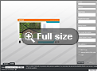

<?xml version="1.0" encoding="UTF-8"?><rss version="2.0"
	xmlns:content="http://purl.org/rss/1.0/modules/content/"
	xmlns:wfw="http://wellformedweb.org/CommentAPI/"
	xmlns:dc="http://purl.org/dc/elements/1.1/"
	xmlns:atom="http://www.w3.org/2005/Atom"
	xmlns:sy="http://purl.org/rss/1.0/modules/syndication/"
	xmlns:slash="http://purl.org/rss/1.0/modules/slash/"
	>

<channel>
	<title>Dynamic imaging &#8211; Web-to-Print &amp; Dynamic Imaging</title>
	<atom:link href="http://www.zetaprints.com/category/dynamic-imaging/feed" rel="self" type="application/rss+xml" />
	<link>http://www.zetaprints.com</link>
	<description></description>
	<lastBuildDate>Mon, 01 Feb 2016 23:12:46 +0000</lastBuildDate>
	<language>en-US</language>
	<sy:updatePeriod>hourly</sy:updatePeriod>
	<sy:updateFrequency>1</sy:updateFrequency>
	<generator>https://wordpress.org/?v=4.4.1</generator>
	<item>
		<title>Dynamic imaging widget</title>
		<link>http://www.zetaprints.com/dynamic-imaging/dynamic-imaging-widget</link>
		<pubDate>Fri, 10 Feb 2012 13:31:37 +0000</pubDate>
		<dc:creator><![CDATA[jurozeta]]></dc:creator>
				<category><![CDATA[Dynamic imaging]]></category>

		<guid isPermaLink="false">http://www.zetaprints.com/?p=3191</guid>
		<description><![CDATA[ZetaPrints dynamic imaging and web-to-print Flash widget can be easily embedded into any web page. T...]]></description>
				<content:encoded><![CDATA[<p>ZetaPrints dynamic imaging and web-to-print Flash widget can be easily embedded into any web page. The widget can show templates from an existing catalog of designs or you can upload your own. It&#8217;s free and <a title="web-to-print plugin" href="http://code.google.com/p/e-cards-plugin/">open source</a>.<span id="more-3191"></span></p>
<h2>About</h2>
<p>The Flash widget can be used anywhere you need to produce a personalized image using a template:</p>
<ul>
<li><a title="Dynamic imaging eCard" href="http://magento.zetaprints.com/w.aspx?t=6003A069-77E9-4F07-A302-CB1DA1809DFD">e-cards</a></li>
<li><a title="Dynamic imaging web badge" href="http://magento.zetaprints.com/w.aspx?t=D74DC961-8470-4DBA-BF8D-AA4D34B5A2BD">badges</a>,</li>
<li>web page elements (<a title="Dynamic imaging web button" href="http://magento.zetaprints.com/w.aspx?t=EF03A2C3-7A29-4956-8E93-E0DEDEE2B01D">buttons</a>, <a title="Dynamic imaging web header template" href="http://vadesigner.zetaprints.com/w.aspx?t=623E5B1F-8442-4F79-A80C-8ECC5C52043C">headers</a>, <a title="Dynamic imaging web tabs" href="http://magento.zetaprints.com/w.aspx?t=015F24A6-1A30-4587-8B16-995771B6E877">tabs</a>, etc.)</li>
<li><a title="Dynamic imaging eMail signature template" href="http://magento.zetaprints.com/w.aspx?t=9EBEC50A-4E3D-437E-83F7-C7512A345732">email signatures</a></li>
</ul>
<p><object id="e-cards-plugin" style="float: right;" width="470" height="300" classid="clsid:d27cdb6e-ae6d-11cf-96b8-444553540000" codebase="http://download.macromedia.com/pub/shockwave/cabs/flash/swflash.cab#version=6,0,40,0"><param name="allowScriptAccess" value="sameDomain" /><param name="allowFullScreen" value="false" /><param name="quality" value="high" /><param name="src" value="http://www.zetaprints.com/flash/e-cards-plugin.swf" /><param name="flashvars" value="params=http://realestate.zetaprints.com/RssTemplates.aspx?c=C2A4F04E-401A-4D98-9B0A-220523DB803E" /><param name="allowfullscreen" value="false" /><param name="allowscriptaccess" value="sameDomain" /><embed id="e-cards-plugin" style="float: right;" width="470" height="300" type="application/x-shockwave-flash" src="../../../flash/e-cards-plugin.swf" allowScriptAccess="sameDomain" allowFullScreen="false" quality="high" flashvars="params=http://realestate.zetaprints.com/RssTemplates.aspx?c=C2A4F04E-401A-4D98-9B0A-220523DB803E" allowfullscreen="false" allowscriptaccess="sameDomain" /></object><br />
The widget retrieves templates from ZetaPrints and talks to our <a title="web-to-print API" href="../../../help/dynamic-image-generation-api/">dynamic imaging API</a> to generate images. You can use <a title="dynamic imaging templates" href="http://zetaprints.com">publicly available templates</a> or <a title="web-to-print guide" href="../../../help/category/get-started/">upload your own</a>. Embedding our dynamic imaging widget <a title="How to embed" href="../../../help/tools/image-generation-plugin/">is easy</a>. You can run it in a custom size or as a <a title="web-to-print plugin demo" href="../../../help/samples/image-generator-demo.html">full page</a>.</p>
<p>&nbsp;</p>
<h2>Applications</h2>
<p>We built this dynamic imaging plugin for fun, but there is much more in it than showing funny pictures on blogs.</p>
<ul>
<li><strong>Promotion of your products</strong> &#8211; build a catalog with simplified samples of your print products and ask other websites to embed the plugin. It will drive more traffic to your website as people click through to see more designs.</li>
<li><strong>Promotion of your talent</strong> &#8211; build a catalog with interesting designs and let people have fun with them and see your name as the author.</li>
<li><strong>Integration</strong> &#8211; embed the plugin into your pages with dynamically generated content or <a title="Web-to-print API and integration" href="../../../packages/api-and-integration/">web-to-print integration</a> as we did for <a title="Magento integration" href="../../magento-web-to-print/">Magento</a>.</li>
</ul>
]]></content:encoded>
			</item>
		<item>
		<title>Create banners on the fly</title>
		<link>http://www.zetaprints.com/dynamic-imaging/create-banners-on-the-fly-2</link>
		<pubDate>Mon, 20 Sep 2010 13:01:10 +0000</pubDate>
		<dc:creator><![CDATA[jurozeta]]></dc:creator>
				<category><![CDATA[Dynamic imaging]]></category>

		<guid isPermaLink="false">/?p=2605</guid>
		<description><![CDATA[ZetaPrints dynamic imaging software combines image templates with user input and outputs personalize...]]></description>
				<content:encoded><![CDATA[<p><strong>ZetaPrints dynamic imaging software combines image templates with user input and outputs personalized banner images ready to be served in your ad network.<span id="more-2605"></span></strong></p>
<h2>Banner templates</h2>
<p>Casual and small business advertisers can find a good choice of designs in our ever growing graphic design <a title="ZetaPrints design marketplace" href="http://zetaprints.com/?page=templates;Keywords=Internet%20banner" target="_self">marketplace</a>. They only need to enter their texts or upload images. They don&#8217;t need to be <a title="Web-to-print and dynamic imaging designers" href="../../designers/" target="_self">designers</a> to get a professionally <a title="Dynamic imaging help: Web banners guide" href="../../../help/internet-banners-guide/" target="_self">professionally designed banner</a>.</p>
<p>Some advertisers may want to <a title="Dynamic imaging help: Upload your first template" href="../../../help/upload-your-first-template/" target="_self">upload</a> their own templates and use them <a title="Dynamic imaging help: Access control" href="../../../help/category/access-control/" target="_self">exclusively</a>. The result is still the same &#8211; anyone can <a title="Dynamic imaging help: Template creation" href="../../../help/template-creation/" target="_self">prepare</a> a professionally looking banner in seconds.</p>
<h2>Dynamic banner generation</h2>
<p>Our <a title="ZetaPrints dynamic imaging" href="../" target="_self">dynamic imaging system</a> can be used to create one banner manually or update an entire campaign automatically. Advertiser CMS and product databases can be connected directly to our back-end via <a title="Dynamic imaging API" href="../../../dynamic-imaging/dynamic-imaging-api/" target="_self">dynamic imaging API</a>. If the advertiser changes the daily special in the connected CMS from &#8220;<em>10% off</em>&#8221; to &#8220;<em>free shipping</em>&#8221; we can automatically update all their banners in just a few seconds saving them hours of work.</p>
<h2>Part of your ad network</h2>
<p>ZetaPrints is a hosted service, yet it can be easily integrated into your ad management system using our <a title="Dynamic imaging API" href="../../../dynamic-imaging/dynamic-imaging-api/" target="_self">dynamic imaging API</a>. It is up to you how our service is <a title="Dynamic imaging integration examples" href="../../../dynamic-imaging/integration-examples/" target="_self">presented</a> to your customers.</p>
<h3>Pool of designs</h3>
<p>Our <a title="ZetaPrints design marketplace" href="http://zetaprints.com/" target="_self">marketplace</a> is an optional feature and is only available under our own brand, where we collect the payments and set prices. You may create your own marketplace or only allow use of templates uploaded by your customers for their exclusive use.</p>
<h3>Account management</h3>
<p>You can choose between having a single <a title="Sign up a dynamic imaging master account" href="../../../printers/web-to-print-sign-up/" target="_self">master account</a> for the entire ad network and take full control of all <a title="Dynamic imaging help: Site administration" href="../../../help/site-admin/" target="_self">account management</a> aspects, including registering your own customers, managing templates, setting prices and collecting payments.</p>
<p>Alternatively, you can be &#8220;hands-off&#8221; and let your customers deal with us directly.</p>
]]></content:encoded>
			</item>
		<item>
		<title>Products</title>
		<link>http://www.zetaprints.com/dynamic-imaging/products</link>
		<pubDate>Mon, 13 Sep 2010 13:26:04 +0000</pubDate>
		<dc:creator><![CDATA[jurozeta]]></dc:creator>
				<category><![CDATA[Dynamic imaging]]></category>

		<guid isPermaLink="false">/?p=2457</guid>
		<description><![CDATA[Creating a dynamic imaging template is a lot easier than you think. Anyone capable of making a desig...]]></description>
				<content:encoded><![CDATA[<p>Creating a dynamic imaging template is a lot easier than you think. Anyone capable of making a design is capable of making a template. It does not require any programming or special skills. <span id="more-2457"></span>Consult these product guides before you start working on a specific kind of template:</p>
<table class="tbl_grid_guides_w2p">
<tbody>
<tr>
<td></td>
<td></td>
<td></td>
<td></td>
<td></td>
</tr>
<tr id="sample_product_links">
<td><a title="Bunny eCards" href="http://magento.zetaprints.com/?page=catalogue;CorporateID=284EF372-16BF-4258-A2AB-30D2A000BB26" target="_self">Samples</a> | <a title="Dynamic imaging help: eCards guide" href="../../../help/create-an-ecard/" target="_self">Tutorial</a></td>
<td>Samples | Tutorial</td>
<td><a title="Dynamic imaging - Web banners" href="http://zetaprints.com/?page=catalogue;CorporateID=1841912F-CA3B-43B7-8F6C-B7504E4D4A82" target="_self">Samples</a> | <a title="Dynamic imaging help: Web banners guide" href="../../../help/internet-banners-guide/" target="_self">Tutorial</a></td>
<td><a title="Dynamic imaging web buttons" href="http://magento.zetaprints.com/?page=catalogue;CorporateID=7D20426E-61D2-4638-BCCA-03E2448A560B" target="_self">Samples</a> | <a title="Dynamic imaging help: Web buttons guide" href="../../../help/web-buttons/" target="_self">Tutorial</a></td>
<td><a title="Dynamic imaging web tabs" href="http://magento.zetaprints.com/?page=catalogue;CorporateID=1631F47E-C480-4FF6-8867-50AAFAF571F8" target="_self">Samples</a> | <a title="Dynamic imaging help: Web tabs guide" href="../../../help/web-tabs/" target="_self">Tutorial</a></td>
</tr>
</tbody>
</table>
]]></content:encoded>
			</item>
		<item>
		<title>Features</title>
		<link>http://www.zetaprints.com/dynamic-imaging/features-3</link>
		<pubDate>Mon, 13 Sep 2010 13:03:03 +0000</pubDate>
		<dc:creator><![CDATA[jurozeta]]></dc:creator>
				<category><![CDATA[Dynamic imaging]]></category>

		<guid isPermaLink="false">/?p=2452</guid>
		<description><![CDATA[ZetaPrints is a web-to-print and dynamic imaging service provider. Our service is designed to make o...]]></description>
				<content:encoded><![CDATA[<p>ZetaPrints is a <a title="Web-to-print software" href="../../web-to-print-software/" target="_self">web-to-print</a> and <a title="About dynamic imaging" href="../" target="_self">dynamic imaging</a> service provider. Our service is designed to make online personalization simple and cost effective.<span id="more-2452"></span></p>
<h2 class="tab">Volumes</h2>
<p>We do not place limits on you. Use as much of our service as you need to grow and meet your demand.</p>
<table class="w2p_feat_tbl">
<tbody>
<tr>
<td class="list_title_last" colspan="2"><strong>Unlimited</strong></td>
</tr>
<tr>
<td>Number of dynamic imaging templates</td>
<td class="check_icon_feat"></td>
</tr>
<tr>
<td>Number of dynamic imaging catalogs</td>
<td class="check_icon_feat"></td>
</tr>
<tr>
<td>Number of users</td>
<td class="check_icon_feat"></td>
</tr>
<tr>
<td>Disk space</td>
<td class="check_icon_feat"></td>
</tr>
<tr>
<td>Traffic</td>
<td class="check_icon_feat"></td>
</tr>
</tbody>
</table>
<h2 class="tab">Templates</h2>
<p>Our templating system is simple, but powerful. It goes well beyond replacing straight lines of text in a PDF file.</p>
<table class="w2p_feat_tbl">
<tbody>
<tr>
<td class="list_title_last" colspan="2"><strong>Availability</strong></td>
<td class="list_title_last_how"><strong>How to</strong></td>
</tr>
<tr>
<td>Upload your own</td>
<td class="check_icon_feat"></td>
<td class="help_icon_feat"><a href="../../../help/upload-your-first-template/"></a></td>
</tr>
<tr>
<td>Unbounded creativity limits</td>
<td class="check_icon_feat"></td>
<td class="help_icon_feat"><a href="../../../help/category/design-techniques/"></a></td>
</tr>
<tr>
<td>No delay before a template becomes available</td>
<td class="check_icon_feat"></td>
<td class="help_icon_feat"></td>
</tr>
<tr>
<td>RGB color mode</td>
<td class="check_icon_feat"></td>
<td class="help_icon_feat"></td>
</tr>
<tr>
<td colspan="3">Output files</td>
</tr>
<tr>
<td class="feat_sub_lists_w2p">CDR, JPG, GIF, PNG</td>
<td class="check_icon_feat"></td>
<td class="help_icon_feat"><a href="../../../help/output-files-generation/"></a></td>
</tr>
</tbody>
</table>
<h2 class="tab">Variable fields</h2>
<p><span>It is very simple to convert an ordinary ad design into a usable ad template – just name the fields for user texts and images.</span><br />
<span>The system reads the field information directly from the file. There are numerous rules you can apply, such as alignment, horizontal and vertical shift, removal of elements if some other elements are not present, maximum and minimum length, recommended image resolution, etc.</span></p>
<table class="w2p_feat_tbl">
<tbody>
<tr>
<td class="list_title_last" colspan="2"><strong>Availability</strong></td>
<td class="list_title_last_how"><strong>How to</strong></td>
</tr>
<tr>
<td colspan="3">Variable text and images</td>
</tr>
<tr>
<td class="feat_sub_lists_w2p">Variable text</td>
<td class="check_icon_feat"></td>
<td class="help_icon_feat"><a href="../../../help/category/text-fields/"></a></td>
</tr>
<tr>
<td class="feat_sub_lists_w2p">Variable images</td>
<td class="check_icon_feat"></td>
<td class="help_icon_feat"><a href="../../../help/category/image-fields/"></a></td>
</tr>
<tr>
<td class="feat_sub_lists_w2p">Automatic text alignment</td>
<td class="check_icon_feat"></td>
<td class="help_icon_feat"></td>
</tr>
<tr>
<td class="feat_sub_lists_w2p">Automatic image alignment</td>
<td class="check_icon_feat"></td>
<td class="help_icon_feat"><a href="../../../help/image-alignment/"></a></td>
</tr>
<tr>
<td class="feat_sub_lists_w2p">Auto replacement</td>
<td class="check_icon_feat"></td>
<td class="help_icon_feat"></td>
</tr>
<tr>
<td class="feat_sub_lists_w2p">Auto removal</td>
<td class="check_icon_feat"></td>
<td class="help_icon_feat"><a href="../../../help/conditional-object-removal/"></a></td>
</tr>
<tr>
<td class="feat_sub_lists_w2p">Conditional line removal</td>
<td class="check_icon_feat"></td>
<td class="help_icon_feat"><a href="../../../help/conditional-line-removal/"></a></td>
</tr>
<tr>
<td class="feat_sub_lists_w2p">Paragraph style matching</td>
<td class="check_icon_feat"></td>
<td class="help_icon_feat"><a href="../../../help/paragraph-style-matching/"></a></td>
</tr>
<tr>
<td class="feat_sub_lists_w2p">Character formatting matching</td>
<td class="check_icon_feat"></td>
<td class="help_icon_feat"><a href="../../../help/character-formatting-matching/"></a></td>
</tr>
<tr>
<td class="feat_sub_lists_w2p">Automatic font resizing</td>
<td class="check_icon_feat"></td>
<td class="help_icon_feat"><a href="../../../help/auto-font-resizing/"></a></td>
</tr>
<tr>
<td class="feat_sub_lists_w2p">Linked text frames</td>
<td class="check_icon_feat"></td>
<td class="help_icon_feat"><a href="../../../help/linked-text-frames/"></a></td>
</tr>
</tbody>
</table>
<h2 class="tab">UI</h2>
<p>Our dynamic imaging software works best as a back-end solution delivered through your own user interface and ad server. It is easy to integrate with our <a title="Dynamic imaging integration" href="../../../dynamic-imaging/dynamic-imaging-api/">Dynamic imaging API</a>.</p>
<table class="feattbl" border="0">
<tbody><!-- tr>

<td><strong>Twictures</strong></td>


<td>Twictures is a PHP script that combines Twitter data feeds with ZetaPrints dynamic imaging. <a title="Twictures" href="/twictures" target="_self"></a></td>


<td><a href="/_img/ui/twictures.png"></a></td>


</tr -->
<tr>
<td><strong>OpenX</strong></td>
<td>OpenX plugin uses ZetaPrints dynamic imaging API to help advertisers prepare their creatives (banners) right inside OpenX. <a title="OpenX image generator" href="../../../help/openx-image-generator/" target="_self"></a></td>
<td><a href="../../../_img/ui/openx_image_generator.png"></a></td>
</tr>
<tr>
<td><strong>eCards widget</strong></td>
<td>The widget is written in Flash and can be embedded into any web page. <a title="eCards plugin for WordPress" href="../../../dynamic-imaging/dynamic-imaging-widget/" target="_self"></a></td>
<td><a href="../../../_img/ui/widget.png"></a></td>
</tr>
</tbody>
</table>
<h2 class="tab">System</h2>
<p>We tend to make system management as easy as it can be so that you don&#8217;t have to be an expert to maintain your dynamic imaging portal.</p>
<table class="w2p_feat_tbl">
<tbody>
<tr>
<td class="list_title_last" colspan="2"><strong>Availability</strong></td>
<td class="list_title_last_how"><strong>How to</strong></td>
</tr>
<tr>
<td>No special IT skills required</td>
<td class="check_icon_feat"></td>
<td class="help_icon_feat"></td>
</tr>
<tr>
<td>Various reports</td>
<td class="check_icon_feat"></td>
<td class="help_icon_feat"><a href="../../../help/site-admin/"></a></td>
</tr>
<tr>
<td>Full control over your catalogs and templates</td>
<td class="check_icon_feat"></td>
<td class="help_icon_feat"><a href="../../../help/category/template-management/"></a></td>
</tr>
<tr>
<td>Accept Credit Card payments online</td>
<td class="check_icon_feat"></td>
<td class="help_icon_feat"><a href="../../../help/prices-and-payments/"></a></td>
</tr>
<tr>
<td>Manage prices and discounts</td>
<td class="check_icon_feat"></td>
<td class="help_icon_feat"><a href="../../../help/setting-up-prices-and-discounts/"></a></td>
</tr>
</tbody>
</table>
<h2 class="tab">Access control</h2>
<p>You can assign different access control rules to each of your catalogs in order to allow or restrict access to them.</p>
<table class="w2p_feat_tbl">
<tbody>
<tr>
<td class="list_title_last" colspan="2"><strong>Availability</strong></td>
<td class="list_title_last_how"><strong>How to</strong></td>
</tr>
<tr>
<td>Access control</td>
<td class="check_icon_feat"></td>
<td class="help_icon_feat"><a href="../../../help/user-access-control/"></a></td>
</tr>
<tr>
<td>Password protected catalogs</td>
<td class="check_icon_feat"></td>
<td class="help_icon_feat"><a href="../../../help/corporate-access/"></a></td>
</tr>
<tr>
<td>Public catalogs</td>
<td class="check_icon_feat"></td>
<td class="help_icon_feat"><a href="../../../help/public-access/"></a></td>
</tr>
<tr>
<td>User administration</td>
<td class="check_icon_feat"></td>
<td class="help_icon_feat"><a href="../../../help/user-administration/"></a></td>
</tr>
</tbody>
</table>
<p>We value your <a title="ZetaPrints privacy policy" href="../../../footer-menu/privacy-policy/" target="_self">privacy</a>. <strong>We do not sell or share any information about you or your users. Never.</strong></p>
<p>No credit card details are stored by ZetaPrints. All user activities are logged and monitored. You have full control over <a title="Dynamic imaging help: User management" href="../../../help/category/user-management/" target="_self">access to your site</a> down to catalog level.</p>
]]></content:encoded>
			</item>
		<item>
		<title>Industry solutions</title>
		<link>http://www.zetaprints.com/dynamic-imaging/industry-solutions-2</link>
		<pubDate>Mon, 13 Sep 2010 10:04:05 +0000</pubDate>
		<dc:creator><![CDATA[jurozeta]]></dc:creator>
				<category><![CDATA[Dynamic imaging]]></category>

		<guid isPermaLink="false">/?p=2441</guid>
		<description><![CDATA[Dynamic imaging is a versatile technology. We can help you whenever you need a template based image ...]]></description>
				<content:encoded><![CDATA[<p><a title="About dynamic imaging" href="../" target="_self">Dynamic imaging</a> is a versatile technology. We can help you whenever you need a template based image generation. That is, when you want non-designers to produce display ready files.<span id="more-2441"></span></p>
<p>ZetaPrints is an open platform. It can be used by anyone in the supply chain of display designs:</p>
<table class="roles_list">
<tbody>
<tr class="roles_list_bottom">
<td><a href="../../designers/"></a><br />
<a title="Web-to-print and dynamic imaging designers" href="../../designers/" target="_self">Designers</a>&#8211; selling designs or simplifying design variations</td>
<td><a href="../../../businesses/web-to-print-for-franchises/"></a><br />
<a title="Web-to-print and dynamic imaging franchises" href="../../../businesses/web-to-print-for-franchises/" target="_self">Franchises</a>&#8211; maintaining the brand and driving the costs down</td>
<td><br />
<span style="text-decoration: underline;">Online advertisers</span>&#8211; full or partial automation of banner generation</td>
<td class="roles_list_last"><a href="../../businesses/"></a><br />
<a title="Web-to-print and dynamic imaging businesses" href="../../businesses/" target="_self">Online publishers</a>&#8211; making banner advertising easy and cost effective for SME</td>
</tr>
</tbody>
</table>
]]></content:encoded>
			</item>
		<item>
		<title>Cost</title>
		<link>http://www.zetaprints.com/dynamic-imaging/cost</link>
		<pubDate>Sun, 05 Sep 2010 01:55:55 +0000</pubDate>
		<dc:creator><![CDATA[admin]]></dc:creator>
				<category><![CDATA[Dynamic imaging]]></category>

		<guid isPermaLink="false">/?p=2284</guid>
		<description><![CDATA[ZetaPrints dynamic imaging has only one fixed fee per every image generated. This is the only fee we...]]></description>
				<content:encoded><![CDATA[<p>ZetaPrints dynamic imaging has only one fixed fee per every image generated. This is the only fee we charge. There are no other fees or charges. All other usage, such as set up, code samples, support, etc. is free.<span id="more-2284"></span></p>
<p>The primary <a title="Web-to-print and dynamic imaging output file generation" href="../../../help/output-files-generation/" target="_self">output</a> of dynamic imaging is bitmaps (raster images). Unlike our <a title="Web-to-print software" href="../../web-to-print-software/" target="_self">web-to-print</a> service there is no need to generate <a title="Web-to-print PDF settings" href="../../../help/pdf-settings-explained/" target="_self">PDF files</a>, so we treat every image we generate on your request as a single billable event.</p>
<h2>Dynamic imaging fee</h2>
<p>The fee per generated image is set at <strong>US $0.01</strong>. See our <a title="Web-to-print and dynamic imaging pricing" href="../../../web-to-print-and-dynamic-imaging-pricing/" target="_self">pricing page</a> for other currencies and detailed billing rules. Payments are made monthly for the total of the previous calendar month.</p>
<h2>Other costs</h2>
<p>There are no other costs on ZetaPrints part apart from the per-image fee. However, you are likely to have additional expenses to make use of our API.</p>
<h3>Integration</h3>
<p>&#8220;<em>How long is the piece of string?</em>&#8221;</p>
<p>We try to minimize this cost by releasing open source code used for our dynamic imaging projects. You may undertake the integration using your own development resources or even your own skill. Alternatively, our <a title="ZetaPrints web-to-print partners" href="../../../magento-web-to-print/magento-partners/" target="_self">partners</a> are always happy to help you with <a title="Dynamic imaging integration" href="../../../dynamic-imaging/integration-examples/" target="_self">dynamic imaging integration</a>.</p>
<h3>Templates</h3>
<p>Cost of <a title="Web-to-print and dynamic imaging template creation" href="../../../help/template-creation/" target="_self">making templates</a> varies and depends on their complexity. Anyone capable of making a design is capable of making a template. It does not require any programming or special skills.</p>
<p>Sourcing templates from freelance designers can be a quick alternative. Costs start at about US$ 5 per page of design. It is a fraction of the cost for any Flash-based designs.</p>
<h3>Admin and maintenance</h3>
<p>ZetaPrints has no specific maintenance requirements. We take care of all the back-end admin and maintenance for you.</p>
]]></content:encoded>
			</item>
		<item>
		<title>Dynamic imaging API</title>
		<link>http://www.zetaprints.com/dynamic-imaging/dynamic-imaging-api</link>
		<pubDate>Sun, 05 Sep 2010 01:33:26 +0000</pubDate>
		<dc:creator><![CDATA[admin]]></dc:creator>
				<category><![CDATA[Dynamic imaging]]></category>

		<guid isPermaLink="false">/?p=2281</guid>
		<description><![CDATA[ZetaPrints dynamic imaging API is easy to use from server side scripts (PHP, .NET, etc) as well as f...]]></description>
				<content:encoded><![CDATA[<p>ZetaPrints <a title="Dynamic imaging API" href="../../../help/dynamic-image-generation-api/" target="_self">dynamic imaging API</a> is easy to use from server side scripts (PHP, .NET, etc) as well as from the client side (JavaScript). All calls are HTTP GET/POST with a variation of response types such as XML, HTML or singleton.<span id="more-2281"></span></p>
<h2>Dynamic imaging templates</h2>
<p>Our dynamic imaging system is based on vector graphic <a title="Dynamic imaging template creation" href="../../../help/template-creation/" target="_self">templates</a>. You can <a title="Upload your first template" href="../../../help/upload-your-first-template/" target="_self">upload</a> your own templates or use what is offered by other users. Our dynamic imaging templates are just like normal vector graphic designs with certain elements marked as variables to replace them with some other data (<a title="Dynamic imaging variable text fields" href="../../../help/text-fields-naming-overview/" target="_self">text</a> or <a title="Dynamic imaging variable image fields" href="../../../help/image-placeholder/" target="_self">images</a>) at run time.</p>
<h2>Search and browsing API</h2>
<p>Dynamic imaging API has a set of functions for getting lists and searching templates.</p>
<ul>
<li>Get <a title="Dynamic imaging catalogs API" href="../../../help/catalogs-api/" target="_self">list of catalogs</a></li>
<li>Get <a title="Dynamic imaging template details API" href="../../../help/template-details-api/" target="_self">list of templates</a> for a catalog</li>
<li><a title="Search dynamic imaging API" href="../../../help/search-web-to-print-api/" target="_self">Find templates</a> matching search <a title="Search dynamic imaging API keywords" href="../../../help/search-api-web-to-print-keywords/" target="_self">criteria</a></li>
</ul>
<h2>Image generation API</h2>
<p>Calls to our image generation <a title="Dynamic imaging API" href="../../../help/category/api/" target="_self">API functions</a> need to contain the following information:</p>
<ul>
<li>Template ID</li>
<li><a title="How to get API key" href="../../../help/how-to-get-api-key/" target="_self">API key</a></li>
<li>Array of input field names and their values</li>
<li>Array of images and the IDs of replacement images</li>
<li>Required image type (GIF, PNG, JPG)</li>
<li>Output type (XML, image URL, etc)</li>
</ul>
<p>ZetaPrints accepts these parameters, processes the template and generates an image with the text and images specified in the request. The response may vary depending on the client requirements. Usually it is either an XML document with full details of the generated image or just a URL of the image for easy parsing.</p>
<h2>Image editing API</h2>
<p>Images uploaded to ZetaPrints can be edited on the fly to better fit templates or the environment using <a title="Image editing API" href="../../../help/image-editing-api/" target="_self">image editing API</a>.</p>
<ul class="positive_list">
<li>Rotate</li>
<li>Crop</li>
<li>Delete</li>
<li>Restore</li>
<li>Download</li>
<li>Context specific crop/move/resize</li>
<li>Add/remove watermark</li>
</ul>
<p>Calls to these functions usually contain the image ID and the action parameters. The response is either XML with full details about the edited image or just the image URL.</p>
<h2>User management</h2>
<p>ZetaPrints dynamic imaging API caches user data. This feature saves a lot of processing time and bandwidth at both ends. Although using this API is optional it may be quite beneficial in some situations.</p>
]]></content:encoded>
			</item>
		<item>
		<title>Integration examples</title>
		<link>http://www.zetaprints.com/dynamic-imaging/integration-examples</link>
		<pubDate>Sat, 04 Sep 2010 02:06:02 +0000</pubDate>
		<dc:creator><![CDATA[admin]]></dc:creator>
				<category><![CDATA[Dynamic imaging]]></category>

		<guid isPermaLink="false">/?p=2275</guid>
		<description><![CDATA[ZetaPrints dynamic imaging is available via a simple API. It is easy to integrate our dynamic imagin...]]></description>
				<content:encoded><![CDATA[<p>ZetaPrints dynamic imaging is available via a simple <a title="Web-to-print API and integration" href="../../../packages/api-and-integration/" target="_self">API</a>. It is easy to integrate our dynamic imaging at different levels using different features.<span id="more-2275"></span></p>
<h2>OpenX</h2>
<p><a title="OpenX image generator" href="../../../help/openx-image-generator/" target="_self">OpenX plugin</a> uses ZetaPrints <a title="Dynamic imaging API" href="../../../help/dynamic-image-generation-api/" target="_self">dynamic imaging API</a> to help advertisers prepare their creatives (<a title="Dynamic imaging banners" href="../../../help/internet-banners/" target="_self">banners</a>) right inside OpenX. Our dynamic imaging API is tightly integrated into OpenX via the plugin. It makes the dynamic imaging feature look like a native part of OpenX.</p>
<h2>E-cards widget</h2>
<p>This would be the easiest of integration options. The widget is written in Flash and can be embedded into any web page. No server side code is required, but what you can do with it is quite limited. <a title="eCard creation" href="../../../help/create-an-ecard/" target="_self">E-cards</a> widget is an <a title="eCards plugin project home" href="http://code.google.com/p/e-cards-plugin/" target="_self">open source project</a> that anyone can reuse and modify to meet any specific integration requirements. In other words, it&#8217;s a good starting point for something bigger than just an <a title="Dynamic imaging flash widget" href="../../../dynamic-imaging/dynamic-imaging-widget/" target="_self">e-card widget</a>.</p>
<p><object id="e-cards-plugin" width="600" height="400" classid="clsid:d27cdb6e-ae6d-11cf-96b8-444553540000" codebase="http://download.macromedia.com/pub/shockwave/cabs/flash/swflash.cab#version=6,0,40,0"><param name="allowScriptAccess" value="sameDomain" /><param name="allowFullScreen" value="false" /><param name="quality" value="high" /><param name="src" value="http://www.zetaprints.com/flash/e-cards-plugin.swf" /><param name="flashvars" value="params=http://zetaprints.com/RssTemplates.aspx?c=D8506E6F-A4CE-4219-968D-01B1AE6CAB90" /><param name="allowfullscreen" value="false" /><param name="allowscriptaccess" value="sameDomain" /><embed id="e-cards-plugin" width="600" height="400" type="application/x-shockwave-flash" src="../../../flash/e-cards-plugin.swf" allowScriptAccess="sameDomain" allowFullScreen="false" quality="high" flashvars="params=http://zetaprints.com/RssTemplates.aspx?c=D8506E6F-A4CE-4219-968D-01B1AE6CAB90" allowfullscreen="false" allowscriptaccess="sameDomain" /></object></p>
]]></content:encoded>
			</item>
	</channel>
</rss>

<!-- Localized -->